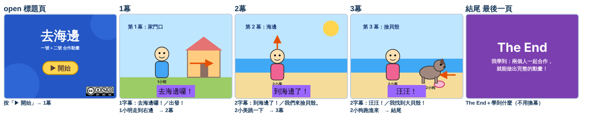

兩個人合在一起（新手版）
兩人各做各的 → 二號交檔案 → 一號合在一起。
① 下載範本
一號下載 1.sb3，二號下載 2.sb3。
打開方法：Scratch 的「檔案 → 從你的電腦挑選」→ 選自己的範本。（開自己的範本可以用。）
🎮 遊戲組
🎬 動畫組
藍色頁一號畫，紫色頁二號畫。把背景畫成你的畫面，名字不要改。
遊戲組 一號：open、menu、1說明、1遊戲、1完成 ｜ 二號：2說明、2遊戲、2完成、成果
動畫組 一號：open、1幕 ｜ 二號：2幕、3幕、結尾
要廣播時：從下拉選單選
廣播訊息 [1遊戲 v]
❌ 不要點「新的訊息」自己打字。
多打一個空格，例如「1 遊戲」，就變成另一個訊息，按了沒反應。
② 角色取名字：號碼＋東西
名字前面寫你的號碼。
| 一號的角色 | 二號的角色 |
|---|---|
| 1標題、1開始鈕 | 2主角、2終點 |
| 1選第一關、1選第二關 | 2開始鈕、2回選單 |
| 1主角、1終點 | 2再玩、2下一步 |
| 1再玩、1下一步、1回選單 | 2成果字、2從頭再玩 |
為什麼？兩人都有「主角」，合在一起時 Scratch 會把一個改成「主角2」，就分不清是誰的。
二號 ③ 把東西交給一號
- 先存檔。
檔案 → 下載到你的電腦。
- 在右下角「角色區」的小圖上按右鍵 → 匯出。
每個 2 開頭的角色，各按一次就好。
按了好像沒反應？檔案已經存到「下載」了。
- 點最右下角的舞台 → 上面的「背景」。
在紫色的背景上按右鍵 → 匯出。
遊戲組 4 張：2說明、2遊戲、2完成、成果。
動畫組 3 張：2幕、3幕、結尾。 - 在 USB 開兩個資料夾：「角色」和「背景」。
打開「本機 → 下載」，看「類型」那一欄：
SPRITE3 檔案 → 放進「角色」
SVG 或 PNG → 放進「背景」名字有 (1)、(2) 的是重複的，不要拿。
一號 ④ 合在一起
- 先備份。
左上角的作品名字改成 1_備份 → 檔案 → 下載到你的電腦。
離線版會跳出存檔視窗：檔名打 1_備份。
下載好，再把名字改成 完成。
- 插上 USB。滑鼠移到右下角的貓咪按鈕 → 上傳角色。
打開 USB 的「角色」資料夾，選裡面的檔案。按住 Ctrl 可以一次選好幾個。
背景圖不要在這裡選。
- 每個新角色都點一下，看程式還在。
名字後面多一個 2（例如 2主角2）＝放了兩次，刪掉多的那個。
- 點舞台 → 背景 → 每一張紫色背景都按右鍵 → 刪除。
紫色的全部先刪掉，再上傳。
- 滑鼠移到貓咪旁邊的背景按鈕 → 上傳背景。
打開 USB 的「背景」資料夾，一次選全部。
- 看每張背景的名字。
要剛好是 2說明、2遊戲、2完成、成果（動畫：2幕、3幕、結尾）。
有 (1) 或多一個 2，就在畫圖區上方的名字格改回來。
- 按綠旗，兩個人一起從頭玩到尾。
每一頁都會換、按鈕都會動、角色不會亂出現。
壞掉了？打開 1_備份.sb3 再做一次。
- 檔案 → 下載到你的電腦。
作品名字是 完成，就會存成 完成.sb3。（離線版：檔名打 完成。）
🎬 動畫組：怎麼說話、怎麼換幕
每一幕：字幕角色講 2 句＋演員做 1 個動作。
字幕角色講完，就換下一幕。每一幕只能有一個換幕的。
說話用 A11 的自訂積木「顯示 (字幕) 說出 (配音) 等待 (秒數)」。一號用「1字幕」、二號用「2字幕」。造型和音效一句一個，名字一樣：1、2、3…
當 @greenFlag 被點擊 隱藏
當背景換成 [1幕 v] 顯示 [1] 說出 [1] 等待 [0.5] :: custom 顯示 [2] 說出 [2] 等待 [0.5] :: custom 背景換成 [2幕 v]
當背景換成 [1幕 v] 定位到 x:(-150) y:(-40) 顯示 滑行 (3) 秒到 x:(170) y:(-40)
當背景換成 [2幕 v] 隱藏
當角色被點擊 背景換成 [1幕 v]
y 改變 (40) 等待 (0.3) 秒 y 改變 (-40)
字幕會等配音播完、再等 0.5 秒才換下一句，所以配音長，演員就有時間做完動作。
❌ 不要用「背景換成下一個」。要選名字：背景換成 [2幕]。
先畫這張表：誰在哪一幕出場？
| 角色 | open 標題頁 | 1幕 | 2幕 | 3幕 | 結尾 最後一頁 |
|---|---|---|---|---|---|
| 1標題 | 顯示 | 隱藏 | 隱藏 | 隱藏 | 隱藏 |
| 1開始鈕 | 顯示・按了換幕 | 隱藏 | 隱藏 | 隱藏 | 隱藏 |
| 1CC | 顯示 | 隱藏 | 隱藏 | 隱藏 | 隱藏 |
| 1小明 | 隱藏 | 顯示＋走路 | 隱藏 | 隱藏 | 隱藏 |
| 1字幕 | 隱藏 | 說 2 句・換幕 | 隱藏 | 隱藏 | 隱藏 |
| 2小美 | 隱藏 | 隱藏 | 顯示＋跳一下 | 顯示 | 隱藏 |
| 2小狗 | 隱藏 | 隱藏 | 隱藏 | 顯示＋跑進來 | 隱藏 |
| 2字幕 | 隱藏 | 隱藏 | 說 2 句・換幕 | 說 2 句・換幕 | 隱藏 |
| 2結尾字 | 隱藏 | 隱藏 | 隱藏 | 隱藏 | 顯示 |
每個綠色格子：寫「當背景換成 [這一幕] → 顯示」（字幕角色的自訂積木會自己顯示、隱藏）。
綠色後面的第一個灰色格子：寫「當背景換成 [那一幕] → 隱藏」。
每一欄只能有一個「換幕」。標題頁是按「開始」換幕；結尾是最後一頁，不用換幕。
📽 完整例子：「去海邊」
按綠旗 → 標題頁 → 按「開始」→ 1幕 → 2幕 → 3幕 → 結尾。
標題頁：作品名稱＋開始鈕＋CC 授權圖示。每一幕：字幕角色講兩句（A11 自訂積木）＋演員一個動作（1幕走路、2幕跳一下、3幕小狗跑進來）。最後一頁：The End＋一句學到什麼。
範例的配音是「叮」一聲的示範音效；請在字幕角色的「音效」裡錄音取代，名字不要改。

每個角色的全部程式（就是上面那張表）：
🎭 舞台
當 @greenFlag 被點擊 背景換成 [open v]
1標題
當 @greenFlag 被點擊 隱藏 當背景換成 [open v] 顯示 當背景換成 [1幕 v] 隱藏
1開始鈕
當 @greenFlag 被點擊 隱藏 當背景換成 [open v] 顯示 當角色被點擊 背景換成 [1幕 v] 當背景換成 [1幕 v] 隱藏
1CC
當 @greenFlag 被點擊 隱藏 當背景換成 [open v] 顯示 當背景換成 [1幕 v] 隱藏
1小明
當 @greenFlag 被點擊 隱藏 當背景換成 [1幕 v] 定位到 x:(-150) y:(-40) 顯示 滑行 (3) 秒到 x:(170) y:(-40) 當背景換成 [2幕 v] 隱藏
1字幕
造型／音效：1＝去海邊囉！ 2＝出發！
＋A11 自訂積木（和對話.sb3 一樣）
當 @greenFlag 被點擊 隱藏 當背景換成 [1幕 v] 顯示 [1] 說出 [1] 等待 [0.5] :: custom 顯示 [2] 說出 [2] 等待 [0.5] :: custom 背景換成 [2幕 v]
2小美
當 @greenFlag 被點擊 隱藏 當背景換成 [2幕 v] 定位到 x:(-60) y:(-50) 顯示 y 改變 (40) 等待 (0.3) 秒 y 改變 (-40) 當背景換成 [3幕 v] 顯示 當背景換成 [結尾 v] 隱藏
2小狗
當 @greenFlag 被點擊 隱藏 當背景換成 [3幕 v] 定位到 x:(230) y:(-70) 顯示 滑行 (1.5) 秒到 x:(110) y:(-70) 當背景換成 [結尾 v] 隱藏
2字幕
造型／音效：1＝到海邊了！ 2＝我們來撿貝殼。 3＝汪汪！ 4＝我找到大貝殼！
＋A11 自訂積木（和對話.sb3 一樣）
當 @greenFlag 被點擊 隱藏 當背景換成 [2幕 v] 顯示 [1] 說出 [1] 等待 [0.5] :: custom 顯示 [2] 說出 [2] 等待 [0.5] :: custom 背景換成 [3幕 v] 當背景換成 [3幕 v] 顯示 [3] 說出 [3] 等待 [0.5] :: custom 顯示 [4] 說出 [4] 等待 [0.5] :: custom 背景換成 [結尾 v]
2結尾字
當 @greenFlag 被點擊 隱藏 當背景換成 [結尾 v] 顯示
藍色框是一號的角色，紫色框是二號的角色。試著改一句話、加一個角色，再按綠旗看看。
動畫組合在一起的方法和上面一樣：二號交角色和紫色背景（2幕、3幕、結尾），一號照 ④ 合併。